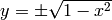
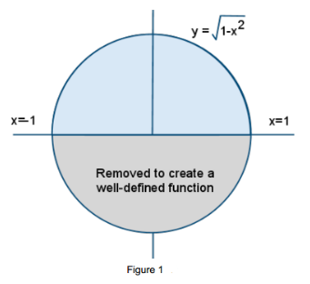
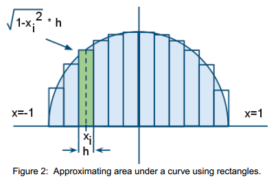
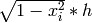

Introduction¶
Problem definition¶
Often, we can estimate a desired quantity by finding the area under a curve (an integral). As an example of this type of computation, we will estimate the value π. Since the area formula for a circle is π⋅r2, we can compute π by finding the area of a unit circle, i.e., a circle with radius r=1.
Algorithmic Strategy¶
The formula for the unit circle is x2 + y2 = 1. Solving for y, we get the formula .Note that each value of x between and x = -1 and x = 1 yields two values of y according to this formula, corresponding to the upper and lower semicircles in Figure 1.
Since the entire circle’s area is π, we will approximate the area of the blue semicircle—i.e., the area under the curve 1-x2—then multiply by 2. To approximate that area under a curve, we will add up the areas of rectangles that approximately cover the area of that semicircle, as illustrated in Figure 2.
This diagram shows 12 rectangles of equal width h that approximately cover the blue semicircular area. Each rectangle is positioned over a subinterval of the x-axis interval [-1,1], and the height of a rectangle is the function’s value at some value xi in that rectangle’s subinterval. Thus, the area of a rectangle is . We must add up the areas of all these rectangles, then double that sum to get the approximation of π.
The more rectangles we use, the greater accuracy we expect in our rectangle approximation to the exact area under the semicircular curve y=f(x). Therefore, we will compute the sum with millions of thin rectangles in order to get better accuracy for our estimate of π.
Note: The accuracy of our estimate depends on how many rectangles we use, and to a lesser extent on how we choose the values xi. We have illustrated in the diagram above choosing xi as the midpoint of each subinterval, which visibly causes the sum of rectangle areas to be a reasonable approximation to the exact semicircular area we seek. If xi represents the midpoint of the ith rectangle, then xi= -1 + (i + 12)*h where h=2.0/NUM_RECTANGLES.